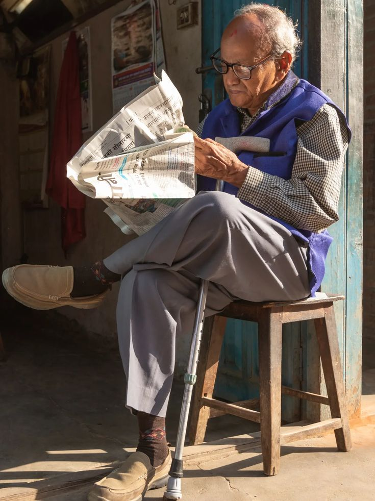

QUE ES EL SER HUMANO?

Ser Cultural y Social: Desde una perspectiva antropológica, el ser humano se define por su capacidad única para crear y participar en sistemas de significado y símbolos compartidos, como el lenguaje, la religión, las normas sociales y las prácticas culturales. Esto implica que la identidad y el comportamiento humano están moldeados por la cultura y el entorno social en el que se desarrolla cada individuo.
 Ser en Relación con el Medio Ambiente: Algunas corrientes de pensamiento, especialmente aquellas que se centran en la ecología y la sostenibilidad, definen al ser humano en términos de su relación con el medio ambiente y otras formas de vida. Desde esta perspectiva, el ser humano es visto como un componente interdependiente de los ecosistemas, con la responsabilidad de cuidar y preservar la biodiversidad y los recursos naturales.
Ser en Proceso de Autodescubrimiento: Desde una visión existencialista, el ser humano se caracteriza por su búsqueda constante de significado y autenticidad en un mundo que a menudo parece carente de sentido intrínseco. Según esta perspectiva, cada individuo tiene la libertad y la responsabilidad de definir su propia identidad y propósito en la vida a través de elecciones y acciones conscientes.
Ser en Continua Evolución: Desde una perspectiva evolutiva y biológica, el ser humano se ve como el resultado de millones de años de cambio y adaptación a través del proceso de evolución. Se reconoce que los humanos comparten un ancestro común con otras formas de vida y que nuestra especie sigue evolucionando tanto biológica como culturalmente.
Ser en Búsqueda de Trascendencia: Algunas tradiciones espirituales y filosóficas consideran al ser humano como un ser en busca de trascendencia más allá de la existencia terrenal. Esto puede implicar la búsqueda de una conexión con lo divino, la exploración de la espiritualidad y la práctica de la introspección y la meditación para alcanzar un estado de conciencia superior.
Estas son solo algunas de las formas en que se puede abordar la pregunta sobre qué es el ser humano, cada una ofreciendo una perspectiva única sobre la naturaleza y la condición humana
Ser en Relación con el Medio Ambiente: Algunas corrientes de pensamiento, especialmente aquellas que se centran en la ecología y la sostenibilidad, definen al ser humano en términos de su relación con el medio ambiente y otras formas de vida. Desde esta perspectiva, el ser humano es visto como un componente interdependiente de los ecosistemas, con la responsabilidad de cuidar y preservar la biodiversidad y los recursos naturales.
Ser en Proceso de Autodescubrimiento: Desde una visión existencialista, el ser humano se caracteriza por su búsqueda constante de significado y autenticidad en un mundo que a menudo parece carente de sentido intrínseco. Según esta perspectiva, cada individuo tiene la libertad y la responsabilidad de definir su propia identidad y propósito en la vida a través de elecciones y acciones conscientes.
Ser en Continua Evolución: Desde una perspectiva evolutiva y biológica, el ser humano se ve como el resultado de millones de años de cambio y adaptación a través del proceso de evolución. Se reconoce que los humanos comparten un ancestro común con otras formas de vida y que nuestra especie sigue evolucionando tanto biológica como culturalmente.
Ser en Búsqueda de Trascendencia: Algunas tradiciones espirituales y filosóficas consideran al ser humano como un ser en busca de trascendencia más allá de la existencia terrenal. Esto puede implicar la búsqueda de una conexión con lo divino, la exploración de la espiritualidad y la práctica de la introspección y la meditación para alcanzar un estado de conciencia superior.
Estas son solo algunas de las formas en que se puede abordar la pregunta sobre qué es el ser humano, cada una ofreciendo una perspectiva única sobre la naturaleza y la condición humana